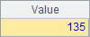
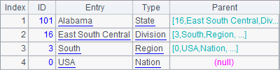
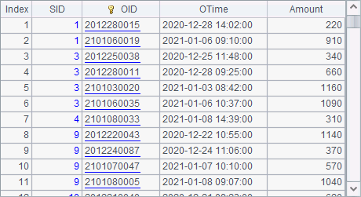
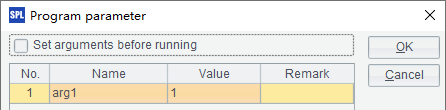

With data-intensive computations, we can load each part of a cluster composite table into the corresponding node¡¯s memory and access the memories to speed up a query processing. The shared data is loaded into memory data zones at the startup of the nodes. Then we access data globally for all processes by memory data zone numbers.
First we need to initiate the related nodes to load a cluster composite table from memories by executing init.splx. The SPL file is located in a node¡¯s main path or search path, in which you can define how to load the shared data:
|
|
A |
B |
|
1 |
¡ |
/Shared initiation code |
|
2 |
if i > 0 |
|
|
3 |
|
=file("students.ctx":i) |
|
4 |
|
=B3.open().cursor().fetch() |
|
5 |
|
>env(STUDENTS, B4) |
The init.splx file defines three parameters – i,n and j, which represent the current node number, the number of nodes and the task name respectivel, and which are passed in at the initiation.

In the above init.splx file, file(fn:z) function searches the current data zone z on the node for file fn. env(v, data) function stores the retrieved file in global variable v in the current node¡¯s memory zone.
Let¡¯s look at how to query a cluster composite table stored in multiple memory data zones:
|
|
A |
|
1 |
[192.168.1.112:8281, 192.168.1.112:8282] |
|
2 |
=hosts(2,A1;) |
|
3 |
=memory(A2,STUDENTS) |
|
4 |
=A3.cursor().fetch() |
Here we use two locally-initiated nodes. The port numbers are 8281 and 8282. In A2, hosts(n, h; j) function searches the nodes¡¯ main processes (sequence h) to get available nodes that hold data zones numbered 1 and 2 respectively, executes init.splx file on each available node, and loads their part of the cluster composite table to the memory. The initiation file init.splx should exist in the main path of each node, and will be automatically loaded at the start. Below is the sequence of available nodes:

You can view the initiation status on the node information window, as shown below:


In A3, memory(h, v) function puts together the global variables (v) in the available nodes¡¯ memory data zones to get the whole cluster composite table. A4 accesses memory data zones to query the cluster composite table. An in-memory cluster composite table is queried in the same manner as an external one is processed. Below is A4¡¯s result: